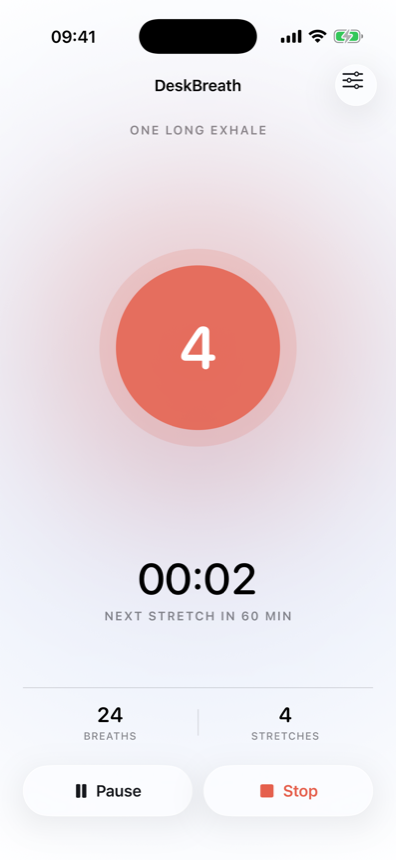
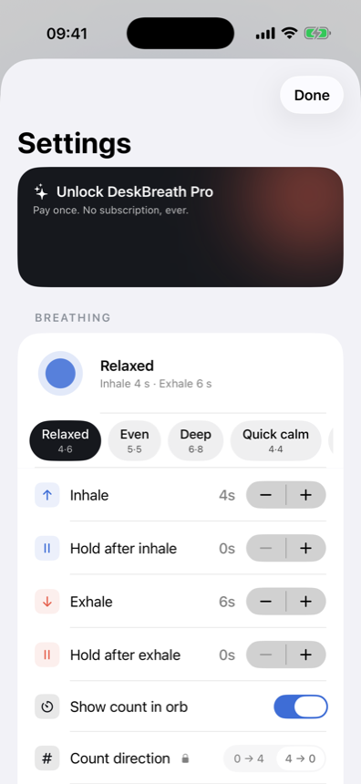
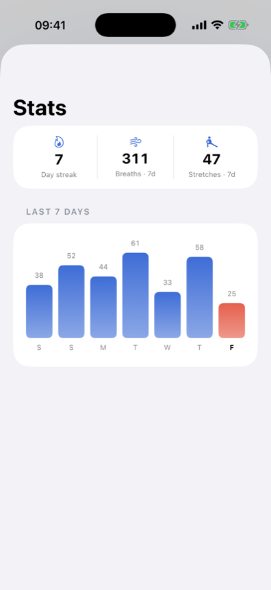

會議接著會議、深度工作接著深度工作之間，呼吸往往是最先被忘記的事。DeskBreath 把它變成看得見、感覺得到的東西——輕點呼吸圓一下就開始，吸氣、停頓、吐氣切換時都有分明的震動提醒你。
箱式呼吸、4-7-8，或自訂吸氣／吐氣秒數——免費開始，不需帳號，選單列或 App 都能直接使用。
吸氣、停頓、吐氣各有分明的震動，讓你不用盯著螢幕也能跟上節奏。
每 30、60、90 或 120 分鐘，會有溫和的提醒告訴你該起身伸展了——真的做到才點「完成」，紀錄才會誠實。
久坐疲勞不會在意你跳過了多少提醒。DeskBreath 只有在你真的點下「完成」時才計入伸展紀錄——而且工作時段滿 10 小時會自動結束，下班後就不會再打擾你。
輕點呼吸圓一下就能開始或暫停，從吸氣到停頓、再到吐氣，每次切換都能感受到不同的震動——不用一直盯著螢幕。
小小的呼吸圓常駐在選單列，也可以選擇一個永遠置頂的懸浮呼吸圓，安靜地待在你正在做的事情上方。



4-4-4-4 箱式呼吸、4-7-8 等——免費內建，一點就能開始。
吸氣、停頓、吐氣都有分明的震動，秒數也能自訂。免費。
更換呼吸圓顏色、放上自己的圖片，還能翻轉倒數方向，配合你的專注方式。
圓形、等化器、環形、綻放、箱型、波形、脈動——選一個適合你的樣子。
看看這週真正完成了幾次，持續累積你的連續紀錄。
每 30、60、90 或 120 分鐘提醒一次——真的做到才點「完成」。
Pro 只需一次付費——沒有訂閱，沒有持續扣款。